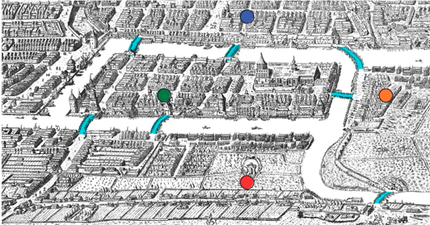

A primeira pergunta a ser feita ao se ouvir falar em Grafo Euler é "O que é Grafo Euler?"
Grafo Euler é um basicamente um mapa com pontos que possuem ligações entre si. Esses pontos nós os chamamos de vértices (V), as linhas que os ligam são arestas (E).
Dizemos que um vértice é adjacente quando possuem uma aresta os conectando, por exemplo, observando a imagem acima podemos dizer que o vértice v1 é adjacente aos vertices v2 e v4. Porém, v1 não é adjacente aos vértices v2 e v5, pois não contém nenhuma aresta o conectando a eles.
Um Grafo Euler é feito quando se tem vértices de grau par e não repete as arestas indo de um ponto a outro. Por exemplo, para replicarmos a imagem acima, podemos começar pelo vértices v1 e continuar pelo seguinte caminho {v1, v3, v5, v2, v4, v1}.
A origem do Grafo Euler se dá de um convite feito ao matemático Leonard Euler em 1736, o convite foi um teste aplicado à Euler para que ele ingressasse como professor em uma universidade de Königsberg, Euler deveria criar uma rota que passasse por todas as pontes da cidade porém sem que repetisse o caminho já feito.
